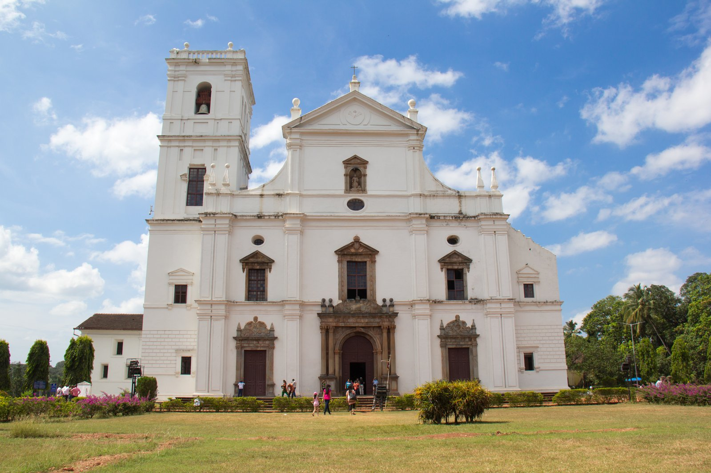

“Any day is a good day for Goa.”
Miramar Beach
Set out to sea in search of dolphins aboard the Hannah Marie. Destin Dolphin Watch and Crab Island Sightseeing Cruise is complete with a spectacular glass-bottom, snack bar, and a climate-controlled cabin. This family-friendly trip is the perfect recipe for maritime bliss. Take in scenic views of the Destin, Florida Harbor and learn about the history as you enjoy the fresh ocean air. Both convenient and comfortable, these tours depart daily and provide plenty of seating for the whole crew. Book your experience today!
Duration 1 Hr.

se cathedral
The word Sé is Portuguese for See. The Se Cathedral was built to commemorate the victory of the Portuguese under Afonso de Albuquerque over a Muslim army, leading to the capture of the city of Goa in 1510.

Fort Aguada
The fort was originally constructed in 1612 to guard against the Dutch. It was a reference point for the vessels coming from Europe at that time. This old Portuguese fort stands on the beach south of Candolim, at the shore of the Mandovi River. It was initially tasked with defense of shipping and the nearby Bardez sub-district.